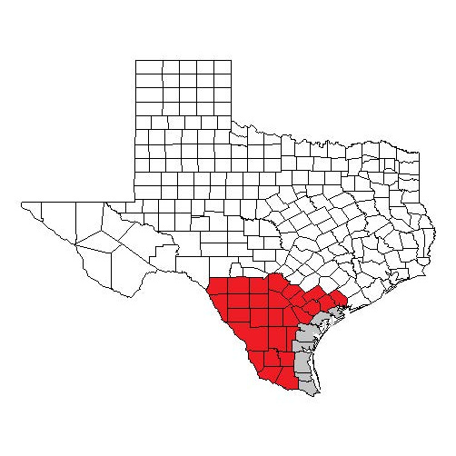

South Texas Plains

MOST POSSIBLE Disaster: Flooding because the ecoregion is really close to multiple major river systems.
Some Major Cities In This Ecoregion Are: San Angelo, Austin, San Antonio, and Del Rio
ESCAPE PLAN - GO NORTH AWAY FROM FLODDING RIVERS. SAVE YOURSELF IMMEDIATLY.